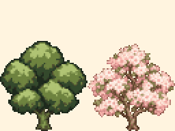
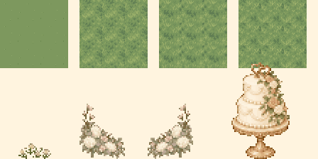
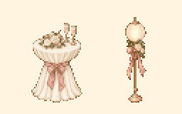
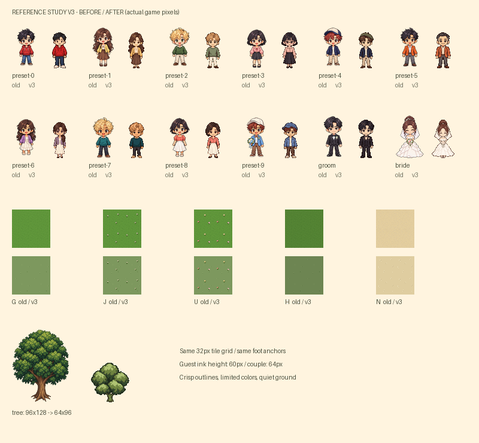
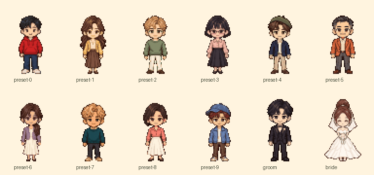
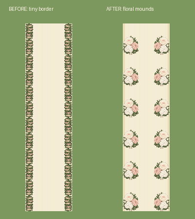

픽셀 정원 · 레퍼런스 고도화 비교
32px 타일과 48×72 캐릭터 프레임을 유지했습니다. 하객의 실제 그림은 높이 60px, 신랑·신부는 64px이며 발 위치가 같습니다. 이전 PNG는 보관하고 manifest의 files로 새 버전을 연결합니다.
참고: Gather의 타일·캐릭터 크기 · LimeZu의 외부 공간 예시. 그림은 내장 이미지 생성 도구로 새로 제작했습니다.
초록 나무 → 연분홍 벚꽃나무

같은 64×96 프레임으로 메인과 방명록에 적용했습니다. 꽃 사이로 가지와 잎도 보입니다.
잔디 질감과 들꽃 · 새로운 꽃장식

잔디 세 질감을 섞고 작은 들꽃을 12곳에 흩어 놓았습니다. 버진로드에는 기존 장미와 수국·안개꽃 장식을 번갈아 배치하고 케이크도 추가했습니다.
정원 웨딩 파티 · 리셉션 소품

나무 한 쌍을 살리고, 바깥 잔디에 꽃·샴페인 잔을 올린 테이블과 리본 조명을 한 쌍씩 놓았습니다. 중앙 길은 비워둡니다.
팔짱 낀 커플 · 단상과 커버
96×72 결합 프레임입니다. 기존 개별 신랑·신부는 네 공간에서 탭하면 안내 대사를 전합니다.
캐릭터와 바닥의 이전 / 개선 비교

새 캐릭터 12종 · 2배 확대

실제 화면 · 390px / 320px
정원 외곽의 어두운 띠를 없애고 상하좌우 여백까지 같은 잔디로 이었습니다. 예식 안내소 중앙은 원목 바닥으로 통일하고, 네 표지판 아래는 잔디 대신 같은 모래빛 입구 광장으로 연결했습니다.
아래는 실제 앱입니다. 단상 위에는 팔짱 낀 결합 커플이 서고, 아이보리 버진로드가 정원 입구까지 이어집니다. 웨딩홀처럼 장미·수국 꽃송이가 큰 32×48px 장식을 양쪽에 6개씩 놓았습니다. 꽃을 길 바깥에 놓아 중앙 96px를 모두 비웠습니다. 단상 양옆 나무와 웨딩 소품을 유지하며 풀잎 잔디와 작은 들꽃을 더했습니다. 하객은 양옆 잔디에서 자유롭게 돌아다닙니다.
웨딩홀 꽃장식 · 이전 / 개선
워커힐 공식 웨딩홀 사진의 풍성한 꽃 덩어리와 반복 배치를 참고했습니다. 실제 게임 픽셀 크기로 비교합니다. 이전의 좁고 촘촘한 띠를 큰 꽃다발로 바꿨습니다.
